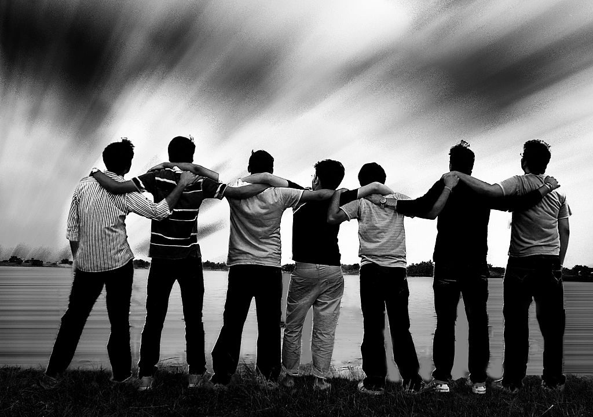

| S.NO |
Name |
cgpa |
Company |
| 1 |
Ashok |
9.99 |
Google |
| 2 |
Jayaprakash |
9.98 |
Cloud |
| 3 |
Abai |
9.95 |
facebook |
| 4 |
Danesh |
9.90 |
Zoho |

If there 's one situation where boys do show empathy, compassion,
and openness, it's when they 're with their best friends. And that type of relationship
has to be protected: In a report published
in the Journal of Research on Adolescence,
NYU Professor Niobe Way found that more than 85% of American adolescent boys
, interviewed over more
than 20 years, described their close male friendships as a kind of deep and emotion-based love
Boys, like girls, crave connection and belonging.
Like all of us, boys need friends, suffer
when they don't believe they have any,
and agonize over the ups and downs of relationships
. Many adults believe that somehow boys need friends less than girls do;
the myth of the stoic male has intruded even into childhood.
In truth, though, no boy is an island;
boys value their friends throughout childhood and adolescence and are happier and healthier
when they have solid relationships with peers.